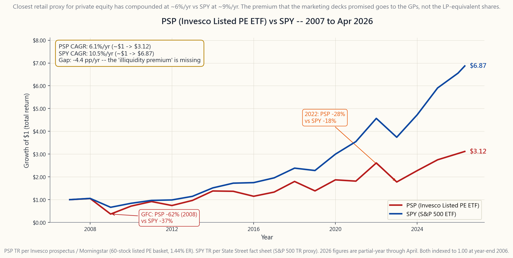
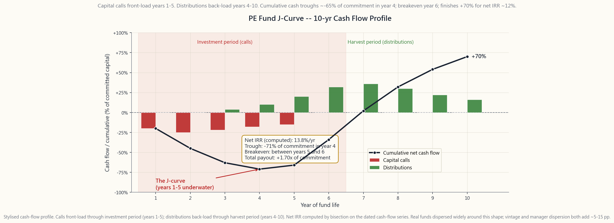

Side Lesson 14: Private Markets — Venture, Buyouts, Private Credit, and the Illiquidity Premium
1. Why This Is Important
Private markets — venture capital, growth equity, leveraged buyouts, and direct lending — manage roughly $13 trillion globally as of the 2025 Preqin / McKinsey reports, up from about $1 trillion at the turn of the century. Every wirehouse, every robo-advisor demo, and every glossy retirement-account brochure now mentions "alternatives" or "private markets" as a portfolio diversifier. Apollo, Blackstone, KKR, Carlyle, and Ares have spent the last decade re-engineering their distribution to reach the retail wallet through interval funds, non-traded BDCs, non-traded REITs, and tender-offer vehicles. The sales pitch is consistent and seductive: *higher returns, lower volatility, real diversification, access to the alpha that built the endowments.*
The reality is messier. Private markets violate two of Horace's hardest constraints — alpha is rare, and the investable universe should be US-listed equities. The alpha that exists in private markets is captured almost entirely by the General Partners through fees and carry, leaving Limited Partners with returns that — once you correct for leverage, smoothing, and survivorship — are broadly indistinguishable from public small-cap value, on a 10-year lockup. The retail-distributed versions (interval funds, non-traded products, BDCs) inherit the fees and the illiquidity but lose the manager-selection advantage, and most are net losers after fees.
Four reasons this lesson earns a slot:
academic estimate of 3% per year of "extra return" for private equity over public equity collapses to roughly zero once you adjust for the 1.5-2x average leverage embedded in LBOs and apply a public-market-equivalent benchmark like the Russell 2000 Value. Phalippou (2020), Stafford (2017), and L'Her et al. all reach this same answer using independent methods. The premium is paid to GPs as carry, not to LPs as return.
are marked-to-market quarterly, by the GP, often using stale comparable-transaction data. The reported volatility of a typical PE fund is 9-11%/yr; the look-through volatility of the same underlying companies measured by traded comparables is 22-25%/yr. The "low correlation with public markets" that anchors most alternative-allocation models is mostly an accounting artifact that disappears the moment the fund is forced to mark-to-bid.
committed at peak leverage and was decimated through the GFC. A 2009-vintage fund of the same manager with the same strategy compounded at 18%/yr. Top-quartile and bottom-quartile dispersion inside a vintage runs 15-20 percentage points. Manager selection matters more in private markets than in public, *and retail does not get to pick the top quartile.* Sequoia, Andreessen, KKR's flagship — those are closed to anyone with less than $50M of commitments. What retail gets is the spillover product.
Interval funds, BCRED, BREIT, BDCs, and non-traded REITs charge 1.5-2.0%/yr management plus 12.5-20% carry, gate redemptions semi-annually, distribute K-1s instead of 1099s, generate UBTI in IRAs, and produce returns that — once you net out fees — are roughly comparable to a 60/40 of public stocks and bonds. The listed alternative-manager equities (BX, KKR, APO, CG, ARES, BN) and the private-equity-tracking ETF PSP are the only retail-clean vehicles, and PSP's record is sobering: about **6% per year since 2007 versus SPY at roughly 9%/yr** over the same window.
If you came to this lesson hoping to be told how to get rich in private markets, the honest answer is: *you can't, and the people who sold you the dream are the ones who profit from selling it.* The useful question is whether a small allocation (5-10%) to listed alternative-manager equities, paired with a willingness to never touch interval funds or non-traded products, earns its slot in a diversified portfolio. We will get there.
2. What You Need to Know
2.1 The Four Pillars of Private Markets
Private markets are not one asset class. They are four overlapping strategies, each with its own return profile, fee structure, and retail accessibility.
Venture capital (VC). Equity investments in early-stage private companies — pre-revenue Seed, post-product-market-fit Series A, scaling Series B/C, pre-IPO late stage. Power-law return distribution (Cambridge Associates: 65% of VC fund returns come from the top 5% of investments). Fund-level top-quartile IRRs reach 25-35%/yr; median fund IRR is 11-13%/yr; bottom quartile is negative. Fund life: 10 years with two-year extensions. Fees: 2/20 with hurdle rate around 8% on most funds.
Growth equity. Minority equity stakes in profitable, growing private companies that are too mature for VC and too small for a buyout. Typical deal: $50-200M check into a $200M-1B revenue company. Lower variance than VC (no power-law tail, more steady-state compounders). Top-quartile IRRs 18-22%/yr.
Buyouts / leveraged buyouts (LBOs). The classic "private equity" vehicle. PE firm acquires a mature company using 50-70% debt and 30-50% equity, runs it for 3-7 years applying operational changes and bolt-on acquisitions, sells to a strategic buyer or via IPO. Returns come from three sources: (a) earnings growth (the operational story the GP tells in marketing), (b) multiple expansion (selling at a higher EV/EBITDA than the buy price), and (c) debt paydown (free cash flow reduces net debt and increases equity value). Leverage amplifies all three.
Private credit / direct lending. Loans extended directly by non-bank lenders to middle-market companies (typically EBITDA $10M-100M, too small for the broadly syndicated loan market). Collateralised floating-rate senior secured paper at SOFR + 500-700 bps, with covenants and call protection. Fund life: 5-7 years closed-end, or perpetual via BDC structure. The fastest-growing pillar — from $500B in 2015 to $1.5 trillion by 2025 — driven by post-Dodd-Frank bank retreat from middle-market lending.
The retail-accessible map: BX (Blackstone), KKR, APO (Apollo), CG (Carlyle), ARES (Ares), and BN (Brookfield) are the listed parent companies. PSP (Invesco Global Listed Private Equity ETF) is the diversified ETF. ARCC, MAIN, OBDC are the listed BDCs. BREIT, BCRED, SREIT, KREST, and the PIMCO-Apollo non-traded products are the interval-fund vehicles. The US-listed-only rule lets you touch the listed; the non-traded vehicles violate it and can be skipped.
2.2 The Fund Lifecycle and the J-Curve
A traditional private-equity or venture-capital fund is a ten-year-life closed-end limited partnership. The mechanics that matter:
committing, say, $1 million to the fund. *You do not pay this yet.* The fund draws capital as needed.
investments, calling capital from LPs by issuing capital calls on 10-15 business days notice. Typical call schedule: 15-25% of commitment in year 1, 20-25% in year 2, 20% in year 3, 15-20% in year 4, residual in year 5.
via IPO, sale to strategic buyers, secondary buyouts, or dividend recaps. Proceeds are distributed to LPs as distributions, typically through years 4-10 with peak distributions in years 6-8.
side-pocket holdouts may extend the fund into years 11-12 with committee approval.
The cumulative net cash flow to the LP — capital calls (negative) plus distributions (positive) — traces out a J-curve: deeply negative through the first 3-4 years (you've funded most of your commitment but received almost nothing back), turning positive somewhere in year 5-6, peaking at a positive total payout in year 9-10. The depth of the J — the maximum drawdown of cumulative cash flow — is typically 60-70% of committed capital. The internal rate of return is computed across the entire dated cash-flow series; a healthy 12% IRR fund still spends 4-5 years underwater on a cumulative-cash basis.
![Stylised cash flow profile of a 10-year private equity fund. Capital calls (red bars) front-load through years 1-5, distributions (green bars) back-load through years 4-10. The black line tracks cumulative net cash flow, which troughs at roughly minus 65 percent of committed capital in year 4, breaks even around year 6, and finishes at plus 70 percent for a net IRR of roughly 12 percent. The shaded region marks the four-to-five-year window during which an LP is underwater on a cumulative-cash basis -- this is the J-curve.](image/side14_pe_jcurve.png)
The J-curve has consequences. (a) You cannot mark a single fund's return after one year and call it a number — early IRRs are noise. (b) You should diversify across vintages to smooth the curve; committing the same dollar amount to a fund every year for five straight years builds a "self-funding portfolio" where year-N distributions roughly fund year-N capital calls. (c) The implied average duration of capital tied up is 4-5 years, not 10 — the weighted-average commitment isn't outstanding for the full ten.
2.3 The 2 and 20 Fee Structure
The canonical PE/VC fee schedule is 2 and 20:
- 2%/yr management fee. Charged on committed capital during
- 20% carried interest ("the carry") on profits above an **8%
Apply this to a fund that produces a 15% gross IRR over 10 years. After 1.5%/yr of effective management fee and the catch-up plus 20% carry on the 7% above the hurdle, the LP's net IRR is roughly 11-12% — a 3-4 percentage-point haircut. On a fund that produces 8% gross IRR, the LP's net is roughly 6%/yr — *below the listed small-cap-value benchmark*, paid for with a 10-year lockup. Fees matter more in a 10% world than they do in a 20% world.
Hedge funds historically charged 2 and 20 with no hurdle and high-water marks instead of catch-up; the modern norm has compressed to roughly 1.5 and 17.5. Direct-lending funds typically charge 1.0-1.5% and 10-15% with a 6% hurdle. BDCs charge 1.5% management plus 17.5-20% of net investment income above a 7% hurdle, and unlike closed-end funds the BDC fee compounds forever (the vehicle never winds down).
2.4 The Illiquidity Premium — Real or Mismeasured?
The case for private markets rests on the illiquidity premium: the idea that an investor who locks money up for 10 years should earn an excess return over the same exposure delivered with daily liquidity. The theory is sound. The empirical measurement is fraught.
The headline number. Cambridge Associates and Burgiss both report private equity IRRs of roughly 13-14%/yr over 1990-2024 versus the S&P 500's 9-10%/yr — a 3-4% headline premium. This is the number most marketing decks lead with.
The leverage adjustment. Average buyout-fund leverage is 1.5-2x debt-to-equity at portfolio-company level. If you delever PE returns to match the leverage of an unlevered public benchmark, roughly 1.5-2 percentage points of the headline premium disappears.
The benchmark adjustment. Buyout funds invest in companies that are typically smaller-cap, value-tilted, and US-domiciled. The fair public benchmark is not the S&P 500 — it's something like the Russell 2000 Value or a size-and-value-matched Fama-French construction. That benchmark has compounded at 10-11%/yr over the same window, eating another 1-1.5 points of premium.
The smoothing adjustment. Private equity NAVs are marked quarterly using comparable-transaction valuations. They lag the public market by 2-4 quarters and dramatically understate true volatility (reported PE vol 9-11%/yr; look-through vol of underlying businesses ~22-25%/yr). Once you de-smooth (using techniques like the Geltner unsmoothing transformation or Stafford's public-market-replication portfolios), the risk-adjusted premium collapses to near zero.
The bottom line. Phalippou (2020) using public-market-equivalent methodology, Stafford (2017) using a leveraged Russell 2000 Value replication, and L'Her, Stoyanova, Shaw, Scott, and Lai (2016) all arrive at the same answer: **net of fees, on a risk-adjusted basis, the average private equity fund roughly matches a leveraged small-cap-value index**. The illiquidity premium exists in theory and may exist for top-quartile managers in practice. It is not a free 3% per year delivered to anyone who writes a check.
2.5 Public Proxies — PSP, BX/KKR/APO, and the BDC Universe
If the institutional product is structurally compromised by fees and the retail product is structurally compromised by access, what's left? Three categories of listed equities offer real-world exposure to the private-markets ecosystem on a US-listed, daily-liquid, 1099-not-K-1 basis.
Listed alternative managers. Blackstone (BX), KKR (KKR), Apollo (APO), Carlyle (CG), Ares (ARES), and Brookfield (BN). You do not own the underlying private investments — you own the fee stream the GP earns from managing other people's money. As assets under management have grown from $1 trillion to $13 trillion globally, these stocks have compounded at 12-18%/yr since their respective IPOs (BX 2007, KKR 2010, APO 2011, CG 2012). They trade like beta-1.3 financials with a private-equity overlay; they pay substantial dividends from fee-related earnings; and they offer operating-leverage exposure to the continued growth of private markets without paying 2 and 20 yourself.
The private-equity ETF (PSP). Invesco Global Listed Private Equity ETF, ticker PSP, expense ratio 1.44%, holds about 60 listed private-equity-related stocks globally — a mix of the GPs above plus publicly-listed buyout companies, business development companies, and private-equity-investing investment trusts (mostly UK-listed). It is the closest thing to a "private equity index fund" available to retail. Its track record is sobering.

The PSP record — about +6%/yr since 2007 versus SPY at roughly +9%/yr over the same window — is a near-perfect crystallisation of this lesson's thesis. The basket of vehicles that delivers private-market exposure to retail has compounded below the broad US equity market, with deeper drawdowns and more concentrated financials risk. The premium that academic studies estimate at 3%/yr shows up nowhere in PSP's record. It shows up in the operating income of BX, KKR, APO, and CG.
Listed BDCs. Ares Capital (ARCC), Main Street Capital (MAIN), Blue Owl Capital (OBDC). These are 1940-Act-regulated permanent- capital vehicles that lend to middle-market companies. They pay 8-12% dividend yields, distribute at least 90% of taxable income, and trade at premiums or discounts to NAV. ARCC and MAIN are the gold-standard names with 15-year operating histories and dividend discipline through the GFC, COVID, and 2022. The risk is that they are levered (1:1 debt-equity is the regulatory limit), the borrower set is sub-investment-grade by definition, and the dividend depends on credit quality holding. In a real recession, expect 30-50% drawdowns and 20-30% dividend cuts.
2.6 The Retail Wrapper Problem — Interval Funds, BCRED, BREIT
The hottest segment of private-markets distribution since 2018 has been the retail-accessible perpetual vehicle — interval funds, non-traded REITs, non-traded BDCs, and tender-offer funds. The sales pitch: institutional-quality private exposure with $2,500 minimums, no accreditation requirement, and quarterly liquidity windows. The reality is that these vehicles inherit every problem of private markets while losing the institutional advantages.
Blackstone Real Estate Income Trust (BREIT). Non-traded REIT, $70B AUM peak, 1.25% management fee plus 12.5% incentive fee above 5% hurdle. Quarterly redemption window capped at 5% of NAV; in late 2022 redemption requests exceeded the cap and BREIT gated withdrawals for 14 consecutive months. NAVs marked monthly by the GP; comparable listed REIT index dropped 25% over the same window that BREIT marked itself down only 7%. The smoothing finally caught up in late 2023 with a 10% catch-up writedown.
Blackstone Private Credit Fund (BCRED). Non-traded BDC, $80B AUM, 1.25% management plus 12.5% incentive on 5% hurdle. Quarterly redemption capped at 5% NAV with a 2% per month cap inside the quarter. Yields 9-10%; expense ratio plus carry plus financing costs totals roughly 4-5% of NAV/yr in fees, eaten before any LP return.
Pluralis / Apollo / KKR equivalents. Every major GP now offers the same product. The fees are similar. The structures are similar. The marketing decks are interchangeable.
**Listed BDCs and the listed alternative managers do not have these problems.** ARCC and MAIN trade on the NYSE at daily prices. BX and KKR trade on the NYSE at daily prices. The fees are embedded in the operating model, not layered on top. If you want private-credit exposure, ARCC is the answer; not BCRED. If you want private-equity-fee-stream exposure, BX is the answer; not BREIT.
2.7 Sizing and the Four-Tranche Map
Where do private markets fit in Horace's four-tranche framework?
Tranche 1 (Growth). The listed alternative managers — BX, KKR, APO, CG — go here as a small overweight (1-3% combined position). They are growth equities with a private-markets-secular-tailwind story. Treat them as a high-beta financials sub-sector tilt, not as a private-markets allocation.
Tranche 2 (Income). Listed BDCs (ARCC, MAIN) go here as a small slice of income (1-3% of portfolio). 8-10% yields, monthly or quarterly distributions, fully 1099-reportable. Sized small because of the tail risk in deep recessions.
Tranche 3 (Stores of Value). No private-markets allocation. Stores of value are about durability and price discovery, neither of which private markets offer.
Tranche 4 (Opportunistic). This is where the *theoretically defensible private-markets allocation lives — if* you have access to top-quartile managers and if you have the wealth to commit across multiple vintages. For retail, the answer is essentially "no". The wrappers available to you (interval funds, non-traded products) are not the institutional product; they are diluted, fee-loaded, gated versions. Alpha is rare — and that applies with particular force here. Skip the retail wrappers.
The clean retail private-markets allocation is therefore: **2-5% in listed alternative managers (BX/KKR/APO/CG/BN basket or PSP), 0-3% in listed BDCs (ARCC/MAIN), and zero in non-traded products.** That's the entire program. Anyone selling you a 15% allocation to interval funds is selling you a fee stream wearing a diversification costume.
3. Common Misconceptions
1. "Private equity outperforms public equity." After fees, leverage adjustment, and benchmark-matching to small-cap value, the average PE fund roughly matches a leveraged Russell 2000 Value index. Top-quartile funds outperform; bottom-quartile funds lose money outright. The retail-accessible products are dominated by the median-and-below cohort.
2. "PE has lower volatility, so it's a diversifier." Reported volatility is a measurement artifact of quarterly NAV smoothing. Look-through volatility — measured against traded comparables — is roughly 2x the reported figure. The "low correlation" is the same artifact. In genuine market stress (2008, 2020, 2022), PE NAVs follow public markets down with a 1-3 quarter lag.
3. "The illiquidity premium is a free lunch." It is paid for with a 10-year lockup, opacity, GP discretion, and a 1.5% management fee accruing every year. Compute the option value of the liquidity you're giving up — it is rarely worth 1-2% per year of return.
4. "BDCs are bond substitutes." They are levered equity in sub-investment-grade middle-market loans. In 2008 the BDC index drew down 75%. They pay equity-like yields because they take equity-like risk. They are not bonds.
**5. "Interval funds give you institutional access at retail minimums."** They give you an institutional fee structure at retail minimums. The actual underlying portfolio is typically a co-invest or fund-of-funds slice, not the flagship vintage that institutions get. The redemption gates ensure that when you most want your money back, you cannot have it.
6. "Top-quartile PE funds compound at 25%/yr." Top-quartile *on a vintage-year cohort* basis. Across 30 years and dozens of vintages that includes a fair amount of survivor bias (the failed funds stopped reporting). Even taking it at face value, you need access — Sequoia, A16Z, Vista, Thoma Bravo — and that access is closed to anyone with less than a few hundred million in commitment capacity.
7. "Crowdfunding lets me invest like a venture capitalist." No. A real VC writes 25-30 checks per fund, sits on boards, helps recruit executives, and has the capital to follow on into winners. Crowdfunding investors write one $500 check, get no governance, no information rights, and get diluted out by every subsequent round.
8. "Carried interest is just compensation for skill." Carried interest is taxed at long-term capital gains rates (20% federal, plus 3.8% NIIT) rather than ordinary income rates (37% federal), even though it is compensation for managing other people's money. This is the largest tax-policy controversy in private markets and tells you something about how the industry has shaped its own rules.
9. "I should buy SpaceX / Stripe pre-IPO on EquityZen." These are tertiary-market trades at marked-up prices, with no governance, no information rights, transfer restrictions, and uncertain exit timelines. The companies themselves may be great. Your terms as a buyer are not.
**10. "Private credit yields more than public credit, so it's better fixed income."** Private credit yields more because the borrowers are smaller, less diversified, more leveraged, and the loans are illiquid. The yield premium is risk premium, not free money. In 2009, private-credit defaults peaked above 10% with recovery rates 35-45% (vs publicly traded high-yield recovery 40%).
4. Q&A
Q1: What is a "vintage year" and why does it matter so much?
A vintage year is the year a fund holds its first close and begins calling capital. PE/VC vintage cohorts of 2006-2007 (peak leverage, peak prices, into a recession) and 1999-2000 (peak dotcom, post-bubble) are the all-time worst. Vintages of 2009-2010 (post-GFC buying, depressed entry multiples) and 1991-1992 are the all-time best. Same managers, same strategies — different entry environment. This is why institutional LPs commit consistently every year rather than timing the market.
Q2: What's the difference between an interval fund and a BDC?
An interval fund is a 1940-Act-registered closed-end fund that holds illiquid assets but offers periodic (typically quarterly) repurchase windows at NAV. A BDC is also a 1940-Act vehicle but is organised as either listed (daily-traded) or non-traded; BDCs primarily make loans to middle-market companies and pay through at least 90% of taxable income. Listed BDCs are the cleanest retail exposure. Non-traded BDCs (BCRED, etc.) inherit interval-fund liquidity problems.
Q3: Should I invest in a non-traded REIT like BREIT?
No. The listed REIT universe (VNQ, IYR) gives you the same exposure with daily pricing, lower fees (10-15 bp vs 200+ bp all-in), and no gates. The "lower volatility" of the non-traded version is a smoothing artifact. The 14-month BREIT redemption gate of 2023 is the example of what you give up.
Q4: How does the 2 and 20 actually compute on an example?
Take a $100M fund with a 15% gross 10-year IRR (so the gross multiple-of-money is roughly 4x). Management fees: 2% of $100M = $2M per year for 5 years on commitments + roughly 2% of declining NAV years 6-10 = roughly $13M total fees over 10 years. Carry: 20% of profits above the 8% hurdle, with catch-up. The LP's net IRR works out to around 11-12%, vs the gross of 15%. On a fund with 8% gross IRR, the same math gives the LP a net IRR of around 5-6% — the fees eat most of the return.
Q5: Why are listed BDCs okay but non-traded BDCs not?
Listed BDCs (ARCC, MAIN) trade daily on the NYSE at market-clearing prices that fully reflect supply and demand. Non-traded BDCs price themselves at a NAV they compute internally, and that NAV is typically about 5-15% above what a listed peer trades at. You buy into the non-traded BDC at the inflated NAV, pay 1.5%+17.5% on that NAV, and discover the gap when redemption gates hit. The listed version is honest about what it's worth.
**Q6: What is "carried interest" and why is the political fight about it relevant to me?**
Carry is the GP's 20% performance fee, taxed at long-term capital gains rates (20% federal plus 3.8% NIIT = 23.8%) rather than ordinary income rates (37% federal + 3.8% NIIT). Estimated cost to the Treasury: $14-25B/yr. Politically vulnerable in every major tax reform cycle. From a portfolio standpoint it's relevant only if you hold listed alternative-manager equities (BX, KKR, etc.) — a change in carry tax treatment hits their net income and their stock price. Worth flagging in any buy thesis.
Q7: Is there an equivalent to PSP for private credit?
Not really. The closest thing is the listed BDC universe — ARCC, MAIN, OBDC, GBDC, PSEC. There is a BDC-focused ETF (BIZD, VanEck BDC Income) with about a 0.40% management fee on top of the acquired-fund fees of the underlying BDCs (which run 7-8% all-in), making BIZD's true cost around 8-9% of NAV. Owning the top 2-3 BDCs directly is cleaner.
**Q8: What is "secondaries" and is it a retail-accessible opportunity?**
A secondary trade is the purchase of an existing LP commitment from the original LP, typically at a discount to NAV (5-30% historically). Secondary-focused funds (Lexington, Ardian, Pantheon, Coller) are genuine institutional strategies. The "secondaries interval fund" products marketed to retail (Pantheon Private Equity Investors etc.) inherit interval-fund problems and dilute the strategy with fund overlay fees. Pass.
**Q9: Why is the J-curve such a big deal? Doesn't IRR account for the timing?**
IRR does account for timing — it's exactly the rate that discounts the cash-flow stream to zero. But the J-curve matters operationally: LPs need to plan for capital calls (which can come on 10-day notice), need to set aside liquid reserves to fund the calls, and need to emotionally tolerate 4-5 years of seeing their commitment "underwater" on paper. The capital that funds calls earns roughly T-bill yields during the wait, dragging on the LP's true return well below the fund's reported IRR. The "true" net IRR after accounting for the opportunity cost of reserve capital is typically 1-2 percentage points lower than the marketed figure.
**Q10: If I had to write one sentence to a friend about private markets, what would it be?**
The premium you've heard about is the GP's, not yours; the diversification you've heard about is a NAV smoothing artifact; and the retail wrappers are designed to extract fees while pretending to give institutional access. If you want exposure, buy BX, KKR, ARCC, and MAIN on the open market and skip everything else.
附加課程 14：私募市場——創投、收購、私募信貸與流動性溢價
1. 為何本課重要
私募市場——創業投資、成長型股權投資、槓桿收購及直接借貸——根據 2025 年 Preqin／麥肯錫報告，全球資產管理規模約達 13 萬億美元，而在世紀之交時僅約 1 萬億美元。每一間大型券商、每一個智能投資顧問示範，以及每一本光鮮亮麗的退休帳戶宣傳冊，現在都提及「另類投資」或「私募市場」作為投資組合分散投資工具。Apollo、Blackstone、KKR、Carlyle 及 Ares 過去十年一直透過定期贖回基金、非上市業務發展公司（BDC）、非上市房地產信託基金及要約回購工具，重新構建其零售分銷渠道。銷售宣傳始終如一且極具吸引力：更高回報、更低波動性、真正的分散投資，以及塑造出捐贈基金的阿爾法機會。
現實卻更為複雜。私募市場違反了陳馬兩項最嚴格的原則——阿爾法機會極為罕見，且可投資範圍應限於美國上市股票。私募市場中存在的阿爾法，幾乎全數透過費用和附帶利益被普通合夥人（GP）所截取，令有限合夥人（LP）實際取得的回報——在調整槓桿、收益平滑及倖存者偏差後——基本上與美國小型價值股在十年鎖定期內的表現無異。零售版本（定期贖回基金、非上市產品、業務發展公司）繼承了高費用和低流動性，卻喪失了挑選頂尖管理人的優勢，大多數在扣除費用後均為淨虧損。
本課佔有一席之地，原因有四：
若你來到本課是希望學習如何在私募市場致富，誠實的答案是：你做不到，而向你兜售這個夢想的人，正是靠著販賣這個夢想而獲利。 真正值得探討的問題，是少量配置（5 至 10%）於上市另類資產管理股票，加上絕不碰定期贖回基金或非上市產品的紀律，是否能在分散投資的投資組合中佔有一席之地。我們稍後將深入探討。
2. 你需要了解的內容
2.1 私募市場的四大支柱
私募市場並非單一資產類別，而是四種相互重疊的策略，各有其獨特的回報特徵、費用結構及零售可及性。
創業投資（VC）。 對早期私人公司的股權投資——預收入的種子輪、確立產品市場契合度的 A 輪、擴張期的 B／C 輪、首次公開招股前的後期階段。回報呈冪律分佈（Cambridge Associates：65% 的創投基金回報來自 5% 的頂尖投資）。基金層面首四分位內部回報率達 25 至 35%；中位數基金內部回報率為 11 至 13%；末四分位則為負值。基金期限：10 年，附帶兩年延期選項。費用：2/20，大多數基金設有約 8% 的最低回報率門檻。
成長型股權投資。 對盈利且持續增長的私人公司持有少數股權，這些公司對創投而言過於成熟，對收購而言規模又太小。典型交易：向收入介乎 2 億至 10 億美元的公司投入 5000 萬至 2 億美元。與創投相比，波動性較低（無冪律尾端，更多穩定複利型公司）。首四分位內部回報率為 18 至 22%。
收購／槓桿收購（LBO）。 典型的「私募股權」工具。私募股權公司以 50 至 70% 債務及 30 至 50% 股權收購一家成熟企業，運營 3 至 7 年，通過業務改革及附加收購提升價值，最終以向策略性買家出售或首次公開招股形式退出。回報來源有三：（a）盈利增長（GP 在市場推廣中所宣揚的業務故事）；（b）估值倍數擴張（以高於買入時的 EV/息稅折舊攤銷前盈利 倍數出售）；（c）還債（自由現金流減少淨債務，提升股權價值）。槓桿對三者均有放大效應。
私募信貸／直接借貸。 由非銀行貸款人直接向中型市場企業（通常息稅折舊攤銷前盈利為 1000 萬至 1 億美元，規模過小無法進入廣泛銀團貸款市場）提供的貸款。以 SOFR 加 500 至 700 基點的有抵押浮息優先擔保票據，設有契約及提前贖回保護。基金期限：封閉式 5 至 7 年，或透過業務發展公司結構以永久形式存在。增長最迅速的支柱——從 2015 年的 5000 億美元增至 2025 年的 1.5 萬億美元——受多德-弗蘭克法案後銀行退出中型市場借貸所推動。
零售可及的投資地圖：BX（Blackstone）、KKR、APO（Apollo）、CG（Carlyle）、ARES（Ares）及 BN（Brookfield）為上市母公司。PSP（Invesco 全球上市私募股權交易所買賣基金）為多元化的交易所買賣基金。ARCC、MAIN、OBDC 為上市業務發展公司。BREIT、BCRED、SREIT、KREST 及 PIMCO-Apollo 非上市產品為定期贖回基金工具。美國上市股票原則允許你接觸上市工具；非上市工具違反此原則，可以略過。
2.2 基金生命週期與 J 形曲線
傳統私募股權或創投基金是一個期限為十年的封閉式有限合夥企業。以下機制至關重要：
LP 的累計淨現金流——資金催繳（負值）加上分配款（正值）——呈現出J 形曲線：在最初 3 至 4 年深度為負（你已承擔大部分承諾資金，但幾乎未收回任何款項），在第 5 至 6 年轉為正值，在第 9 至 10 年達到累計正回報峰值。J 形的深度——即累計現金流的最大回撤——通常為承諾資金的 60 至 70%。內部回報率按整個日期現金流序列計算；一個健康的 12% 內部回報率基金，在累計現金基礎上仍需歷經 4 至 5 年的「水下」期。

J 形曲線有其影響。（a）你無法在一年後衡量單一基金的回報並稱之為確定數字——早期內部回報率只是雜訊。（b）你應跨年份分散投資以平滑曲線；連續五年向基金承諾相同金額，可建立一個「自我融資組合」，其中第 N 年的分配款大致可資助第 N 年的資金催繳。（c）資金佔用的隱含平均存續期為 4 至 5 年，而非 10 年——加權平均承諾資金並非全程佔用十年。
2.3 2/20 費用結構
標準私募股權／創投費用安排為 2 和 20：
- 每年 2% 管理費。 在投資期（第 1 至 5 年）按承諾資金收取，之後按已投資資金（或資產淨值）收取。在一個 10 年期基金中，無論業績如何，此費用累計通常相當於承諾資金的 13 至 15%——即在 GP 為 LP 賺取任何一分錢之前，LP 已以年金形式按毛回報計算，每年向 GP 支付約 1.4 個百分點。
- 超額回報的 20% 附帶利益（「the carry」），超過 8% 最低回報率門檻的部分，附帶追趕條款，GP 在 8% 至 10% 之間可獲 100% 的盈利（即 GP 「追趕」至 20%），之後才啟動 80/20 分成。部分基金不設門檻。部分設有硬性門檻（無追趕條款）。門檻通常按年複利計算，並以已催繳資金（而非承諾資金）為基準。
對沖基金歷來收取 2 和 20，不設門檻，以高水位線代替追趕條款；現代標準已壓縮至約 1.5 和 17.5。直接借貸基金通常收取 1.0 至 1.5% 加上 10 至 15%，設有 6% 門檻。業務發展公司收取 1.5% 管理費加上 7% 門檻以上淨投資收入的 17.5 至 20%，且與封閉式基金不同，業務發展公司的費用永久複利累計（該工具永不清盤）。
2.4 流動性溢價——真實存在還是計量偏差？
私募市場的投資論據建立於流動性溢價之上：即一位將資金鎖定十年的投資者，理應比以每日流動性形式取得相同敞口的投資者獲得更高的超額回報。理論上言之成理。實證計量卻問題重重。
表面數字。 Cambridge Associates 及 Burgiss 均報告 1990 至 2024 年私募股權內部回報率約為每年 13 至 14%，而標準普爾 500 指數為每年 9 至 10%——表面溢價為 3 至 4%。這是大多數市場推廣材料的開場數字。
槓桿調整。 收購基金的組合公司平均槓桿率（債股比）為 1.5 至 2 倍。若將私募股權回報去槓桿以配合非槓桿公開市場基準，表面溢價中約有 1.5 至 2 個百分點消失。
基準調整。 收購基金所投資的公司，通常屬較小市值、價值傾斜且以美國為主。公平的公開市場基準並非標準普爾 500——而應是羅素 2000 價值指數或規模及價值匹配的 Fama-French 構建組合。該基準在同一窗口期的複利回報率為每年 10 至 11%，進一步蠶食了溢價中的 1 至 1.5 個百分點。
平滑調整。 私募股權資產淨值按季度以可比交易估值計算，落後公開市場 2 至 4 個季度，大幅低估真實波動性（報告私募股權波動性每年 9 至 11%；基礎業務透視波動性約每年 22 至 25%）。一旦進行去平滑處理（使用 Geltner 去平滑轉換或 Stafford 的公開市場複製組合等技術），風險調整後的溢價幾乎跌至零。
結論。 Phalippou（2020）採用公開市場等效方法、Stafford（2017）採用槓桿羅素 2000 價值複製方法，以及 L'Her、Stoyanova、Shaw、Scott 及 Lai（2016）均得出相同結論：扣除費用及風險調整後，平均私募股權基金的回報大致等同於槓桿小型價值股指數。 流動性溢價在理論上存在，對頂尖管理人而言在實踐中或許存在。它並非任何人只需寫一張支票便可免費獲得的每年 3%。
2.5 上市代理工具——PSP、BX／KKR／APO 及業務發展公司板塊
若機構版產品在結構上因費用而受損，零售版產品在結構上因準入而受損，還剩下什麼？三類上市股票可在美國上市、每日流動及以 1099 而非 K-1 申報的基礎上，提供真實的私募市場生態系統敞口。
上市另類資產管理公司。 Blackstone（BX）、KKR（KKR）、Apollo（APO）、Carlyle（CG）、Ares（ARES）及 Brookfield（BN）。你所擁有的並非基礎私人投資——而是 GP 管理他人資金所賺取的費用流。隨著全球資產管理規模從 1 萬億增至 13 萬億美元，這些股票自各自首次公開招股（BX 2007 年、KKR 2010 年、APO 2011 年、CG 2012 年）以來，年化複利達 12 至 18%。它們的交易特性類似貝塔值為 1.3 的金融股疊加私募股權敞口；從費用相關盈利中派發可觀股息；並提供私募市場長期增長的業務槓桿敞口，而你無需自行支付 2 和 20。
私募股權交易所買賣基金（PSP）。 Invesco 全球上市私募股權交易所買賣基金，代號 PSP，開支比率為 1.44%，持有約 60 隻全球上市私募股權相關股票——包括上述 GP，以及公開上市的收購公司、業務發展公司及私募股權投資信託（主要為英國上市）。這是零售投資者可獲得的最接近「私募股權指數基金」的工具。其往績令人清醒。
PSP 的往績——自 2007 年以來年化約 +6%，而同期 SPY 約為 +9%——幾乎完美地印證了本課的論點。向零售投資者提供私募市場敞口的工具籃子，其複利回報低於美國整體股票市場，且最大回撤更深，金融業集中風險更高。學術研究估計每年 3% 的溢價，在 PSP 往績中無跡可尋。它出現在 BX、KKR、APO 及 CG 的營業收入中。
上市業務發展公司。 Ares Capital（ARCC）、Main Street Capital（MAIN）、Blue Owl Capital（OBDC）。這些是根據 1940 年《投資公司法》規管的永久資本工具，向中型市場企業提供借貸。它們派付 8 至 12% 股息收益率，分配至少 90% 的應稅收入，並按溢價或折讓相對於資產淨值交易。ARCC 及 MAIN 是黃金標準的代表，擁有 15 年以上的運營歷史，並在環球金融危機、新冠疫情及 2022 年保持股息紀律。風險在於它們是有槓桿的（1:1 債股比為監管上限），借款人群體依定義屬投資級以下，而股息有賴信貸質量維持。在真實的經濟衰退中，預計最大回撤達 30 至 50%，股息削減 20 至 30%。
2.6 零售包裝問題——定期贖回基金、BCRED、BREIT
2018 年以來私募市場分銷最熱門的板塊，是零售可及的永久工具——定期贖回基金、非上市房地產信託基金、非上市業務發展公司及要約回購基金。銷售宣傳：以 2500 美元最低投資額、無需認可投資者資格，享有機構級私募市場敞口及每季流動性窗口。現實是這些工具繼承了私募市場的所有問題，同時喪失了機構優勢。
Blackstone 房地產收入信託（BREIT）。 非上市房地產信託基金，資產管理規模峰值 700 億美元，1.25% 管理費加上 5% 門檻以上 12.5% 的激勵費。季度贖回窗口上限為資產淨值的 5%；2022 年底贖回請求超出上限，BREIT 實施贖回限制長達 14 個月。資產淨值由 GP 按月計算；同期可比上市房地產信託基金指數下跌 25%，BREIT 同期卻僅下調 7%。平滑效果最終在 2023 年底以 10% 的補償性撇帳反映。
Blackstone 私募信貸基金（BCRED）。 非上市業務發展公司，資產管理規模 800 億美元，1.25% 管理費加上 5% 門檻以上 12.5% 的激勵費。季度贖回上限為資產淨值的 5%，季度內每月上限 2%。收益率 9 至 10%；開支比率加附帶利益加融資成本，每年費用總計約佔資產淨值的 4 至 5%，在任何 LP 回報之前已被蠶食。
Pluralis／Apollo／KKR 等同類產品。 每一家主要 GP 現在都提供相同產品。費用相近。結構相近。市場推廣材料如出一轍。
上市業務發展公司及上市另類資產管理公司並無這些問題。 ARCC 及 MAIN 在紐約證券交易所以每日價格交易。BX 及 KKR 在紐約證券交易所以每日價格交易。費用已融入業務模式，而非額外疊加。若你想要私募信貸敞口，ARCC 是答案；而非 BCRED。若你想要私募股權費用流敞口，BX 是答案；而非 BREIT。
2.7 規模配置與四層架構
私募市場在陳馬的四層架構中處於何處？
第一層（增長）。 上市另類資產管理公司——BX、KKR、APO、CG——作為小幅超配放於此層（合計持倉 1 至 3%）。它們是具有私募市場長期增長故事的增長股。將其視為高貝塔金融板塊傾斜，而非私募市場配置。
第二層（收益）。 上市業務發展公司（ARCC、MAIN）作為收益類小切片放於此層（佔投資組合 1 至 3%）。8 至 10% 收益率，每月或每季分配，全數以 1099 申報。規模宜小，原因是深度衰退時存在尾部風險。
第三層（價值儲存）。 不配置私募市場。 價值儲存在於持久性及價格發現，私募市場兩者均無法提供。
第四層（機會性）。 這是理論上可辯護的私募市場配置所在——前提是你有渠道接觸首四分位管理人，且你擁有足夠財富跨多個年份承諾出資。對於零售投資者，答案基本上是「不」。你所能獲得的包裝工具（定期贖回基金、非上市產品）並非機構版產品；它們是稀釋版、費用沉重且設有贖回限制的仿製品。阿爾法機會極為罕見——此點在私募市場尤為突出。跳過零售包裝。
因此，乾淨的零售私募市場配置為：上市另類資產管理公司（BX／KKR／APO／CG／BN 籃子或 PSP）2 至 5%，上市業務發展公司（ARCC／MAIN）0 至 3%，非上市產品為零。 這就是全部方案。任何向你推銷 15% 配置於定期贖回基金的人，正在向你出售一件披著分散投資外衣的費用流。
3. 常見誤解
1. 「私募股權跑贏公開股票市場。」 扣除費用、槓桿調整及基準匹配至小型價值股後，平均私募股權基金大致追平槓桿羅素 2000 價值指數。首四分位基金跑贏；末四分位基金直接虧損。零售可及的產品主要由中位數及以下的基金組成。
2. 「私募股權波動性較低，因此具有分散效果。」 報告的波動性是季度資產淨值平滑的計量假象。按可比上市企業計算的透視波動性，約為報告數字的 2 倍。「低相關性」亦為同一假象。在真實的市場壓力下（2008 年、2020 年、2022 年），私募股權資產淨值跟隨公開市場下行，滯後 1 至 3 個季度。
3. 「流動性溢價是免費午餐。」 它是以 10 年鎖定期、不透明性、GP 酌情權及每年累計 1.5% 管理費為代價的。計算你所放棄的流動性期權價值——這很少值得每年 1 至 2% 的回報。
4. 「業務發展公司是債券的替代品。」 它們是投資於投資級以下中型市場貸款的槓桿股票。2008 年，業務發展公司指數最大回撤達 75%。它們派付股票式收益率，因為它們承擔股票式風險。它們不是債券。
5. 「定期贖回基金以零售最低投資額提供機構級準入。」 它們以零售最低投資額提供機構費用結構。實際的基礎組合通常是跟投或基金中的基金切片，而非機構投資者所獲得的旗艦年份基金。贖回限制確保你最需要資金時，卻無法取回。
6. 「首四分位私募股權基金以每年 25% 複利增長。」 這是按年份同類計算的首四分位。跨越 30 年及數十個年份，其中包含相當程度的倖存者偏差（失敗的基金已停止報告）。即便按面值接受，你也需要渠道——Sequoia、A16Z、Vista、Thoma Bravo——而這些渠道對承諾資金低於數億美元的投資者關閉。
7. 「眾籌平台讓我像創投資本家一樣投資。」 不然。真正的創投資本家每個基金投資 25 至 30 個項目，坐入董事會，協助招募高管，並有資金在贏家中進行後續跟投。眾籌投資者投入 500 美元，無治理權、無知情權，並在每輪融資中被稀釋。
8. 「附帶利益只是對技能的補償。」 附帶利益按長期資本增值稅率（聯邦 20% 加 3.8% 淨投資收益稅）而非普通收入稅率（聯邦 37%）徵稅，儘管它是管理他人資金的報酬。 這是私募市場最大的稅務政策爭議，也說明了這個行業如何塑造自身規則。
9. 「我應該在 EquityZen 購買 SpaceX／Stripe 的首次公開招股前股份。」 這些是三級市場交易，以溢價買入，無治理權、無知情權，附有轉讓限制及不確定的退出時間表。相關公司本身或許出色，但你作為買家的條款並不出色。
10. 「私募信貸收益率高於公開信貸，因此是更好的固定收益。」 私募信貸收益率較高，因為借款人規模較小、分散程度較低、槓桿較高，且貸款缺乏流動性。收益溢價是風險溢價，不是免費的錢。2009 年，私募信貸違約率峰值超過 10%，回收率為 35 至 45%（相比公開交易高收益債券回收率為 40%）。
4. 問答環節
問題 1：什麼是「年份」，為何它如此重要？
年份是基金完成首次關閉並開始提取資金的年份。2006 至 2007 年份的私募股權基金（槓桿及估值雙雙觸頂，緊接著進入衰退）及 1999 至 2000 年份（科網泡沫頂點，泡沫破裂後）是有史以來表現最差的年份。2009 至 2010 年份（環球金融危機後入市，進入倍數受壓）及 1991 至 1992 年份是有史以來表現最佳的年份。相同的管理人，相同的策略——但入市環境不同。這就是機構 LP 每年持續承諾而非擇時入市的原因。
問題 2：定期贖回基金與業務發展公司有何分別？
定期贖回基金是根據 1940 年《投資公司法》註冊的封閉式基金，持有非流動資產，但按資產淨值提供定期（通常為每季度）的回購窗口。業務發展公司亦屬 1940 年《投資公司法》工具，但以上市（每日交易）或非上市形式組建；業務發展公司主要向中型市場企業提供貸款，並分派至少 90% 的應稅收入。上市業務發展公司是最乾淨的零售敞口。非上市業務發展公司（BCRED 等）繼承了定期贖回基金的流動性問題。
問題 3：我應否投資 BREIT 等非上市房地產信託基金？
不應。上市房地產信託基金板塊（VNQ、IYR）以每日定價、較低費用（費用率 10 至 15 基點，對比非上市版本總費用逾 200 基點）及無贖回限制提供相同敞口。非上市版本「較低的波動性」是平滑假象。2023 年 BREIT 長達 14 個月的贖回限制，是你所放棄之物的現實例子。
問題 4：2 和 20 在具體例子中如何計算？
以一個 1 億美元、10 年期毛內部回報率 15% 的基金為例（毛回報倍數約為 4 倍）。管理費：承諾資金 1 億美元的 2% = 每年 200 萬美元，計 5 年，加上第 6 至 10 年約佔遞減資產淨值 2% = 10 年合計管理費約 1300 萬美元。附帶利益：8% 門檻以上利潤的 20%，加追趕條款。LP 淨內部回報率約為 11 至 12%，對比毛利率 15%。對於毛內部回報率 8% 的基金，同樣計算得出 LP 淨內部回報率約為 5 至 6%——費用蠶食了大部分回報。
問題 5：為何上市業務發展公司可以，非上市業務發展公司卻不行？
上市業務發展公司（ARCC、MAIN）在紐約證券交易所以完全反映供求的市場價格每日交易。非上市業務發展公司按自行計算的資產淨值定價，通常比同類上市業務發展公司的交易價格高出 5 至 15%。你以虛高的資產淨值買入非上市業務發展公司，支付 1.5%+17.5% 的費用，直至贖回限制觸發時才發現差距。上市版本對自身的真實價值誠實。
問題 6：什麼是「附帶利益」，圍繞它的政治爭議與我有何關係？
附帶利益是 GP 的 20% 業績費，按長期資本增值稅率（聯邦 20% 加 3.8% 淨投資收益稅 = 23.8%）而非普通收入稅率（聯邦 37% 加 3.8% 淨投資收益稅）徵稅。估計每年對財政部的成本為 140 億至 250 億美元。在每次重大稅務改革週期中均面臨政治風險。從投資組合角度而言，此點僅在你持有上市另類資產管理股票（BX、KKR 等）時才有意義——附帶利益稅務待遇的改變將衝擊其淨利潤及股價。在任何買入論據中值得留意。
問題 7：私募信貸是否有類似 PSP 的工具？
並無真正等效工具。最接近的是上市業務發展公司板塊——ARCC、MAIN、OBDC、GBDC、PSEC。有一隻以業務發展公司為重心的交易所買賣基金（BIZD，VanEck BDC Income），管理費約為 0.40%，疊加基礎業務發展公司的附帶基金費用（總計 7 至 8%），使 BIZD 的真實成本約佔資產淨值的 8 至 9%。直接持有頂尖的 2 至 3 隻業務發展公司更為乾淨。
問題 8：什麼是「二手市場」，零售投資者能否把握相關機會？
二手市場交易是從原始 LP 手中購買其現有 LP 承諾，通常以資產淨值折讓（歷史上折讓 5 至 30%）進行。以二手市場為重心的基金（Lexington、Ardian、Pantheon、Coller）是真正的機構策略。向零售投資者推廣的「二手市場定期贖回基金」產品（Pantheon 私募股權投資者等），繼承了定期贖回基金的問題，並以基金層面的費用稀釋了策略。略過。
問題 9：為何 J 形曲線如此重要？內部回報率不是已考慮時間因素嗎？
內部回報率確實考慮了時間因素——它正是將現金流序列折現至零的利率。但 J 形曲線在實際操作上至關重要：LP 需要為資金催繳作計劃（催繳通知期僅 10 天），需要預留流動資金以資助催繳，並需要在心理上承受 4 至 5 年帳面「水下」的壓力。資助催繳的資金在等待期間僅賺取約短期國庫券的收益率，拖低了 LP 的真實回報，遠低於基金所報告的內部回報率。扣除儲備資金機會成本後的「真實」淨內部回報率，通常比市場推廣數字低 1 至 2 個百分點。
問題 10：如果我要向朋友寫一句關於私募市場的話，應該怎麼說？
你所聽說的溢價屬於 GP 而非你；你所聽說的分散效果是資產淨值平滑假象；而零售包裝的設計，是以收取費用的方式假裝提供機構級準入。若你想要敞口，在公開市場買入 BX、KKR、ARCC 及 MAIN，其餘一概略過。
補充課程 14：私募市場 — 創投、槓桿收購、私募信貸與流動性溢酬
1. 為什麼這堂課很重要
私募市場——創業投資、成長型股權、槓桿收購與直接融資——根據 2025 年 Preqin／麥肯錫報告，全球管理資產規模已達約 13 兆美元，相較於世紀之交的約 1 兆美元大幅成長。如今，每一家大型券商、每一個智能理財平台示範，以及每一本精美的退休帳戶手冊，都把「另類資產」或「私募市場」列為投資組合的分散投資工具。阿波羅（Apollo）、黑石（Blackstone）、KKR、凱雷（Carlyle）與艾瑞斯（Ares）在過去十年間積極重新設計其配銷管道，透過區間型基金（interval fund）、非上市商業開發公司（non-traded BDC）、非上市不動產投資信託，以及要約收購型工具，觸及一般散戶的資金。銷售話術始終如一且極具吸引力：更高報酬、更低波動性、真正的分散投資，以及那些造就大學捐贈基金的阿爾法。
現實情況卻複雜得多。私募市場違反了兩條最嚴格的核心原則——阿爾法極為稀少，且可投資標的應以美國上市股票為主。私募市場中確實存在的阿爾法，幾乎全數由普通合夥人（GP）透過管理費與附帶收益（carry）所取走，留給有限合夥人（LP）的報酬——一旦修正槓桿、平滑效果與倖存者偏差後——在十年鎖定期內，與公開市場的小型價值股大致相當，難以區分。零售端的配銷版本（區間型基金、非上市商品、商業開發公司）繼承了高費用與低流動性，卻失去了篩選優質管理人的優勢，且多數產品扣除費用後都是虧損的。
這堂課之所以值得安排的四個理由：
如果你來上這堂課，是希望被告知如何在私募市場致富，誠實的答案是：你做不到，而向你兜售這個夢想的人，才是靠著兜售而獲利的一方。 真正有意義的問題是：對上市另類資產管理公司股票進行小幅配置（5 至 10%），加上永遠不碰區間型基金或非上市商品，能否在分散投資的投資組合中站穩一席之地？我們最終會回答這個問題。
2. 你需要了解的事
2.1 私募市場的四大支柱
私募市場不是單一資產類別，而是四種相互交疊的策略，各有其報酬輪廓、費用結構與零售可及性。
創業投資（VC）。 對早期階段私人公司進行股權投資——尚未有營收的種子輪、已驗證市場契合度的 A 輪、規模化的 B 輪／C 輪、上市前的後期階段。報酬呈現冪次法則分配（Cambridge Associates：65% 的創投基金報酬來自前 5% 的投資項目）。基金層級前四分之一 IRR 可達 25 至 35%/年；中位數基金 IRR 為 11 至 13%/年；後四分之一為負值。基金存續期：10 年，並可延長兩年。費用：2/20，多數基金設有約 8% 的最低報酬門檻。
成長型股權。 對盈利中、成長中的私人公司取得少數股份，這些公司太過成熟，不適合創投；又太過小型，不適合槓桿收購。典型交易：向一家營收 2 億至 10 億美元的公司投入 5,000 萬至 2 億美元。相較創投波動性較低（無冪次法則尾端，更多穩定成長型公司）。前四分之一 IRR 為 18 至 22%/年。
收購型投資／槓桿收購（LBO）。 典型的「私募股權」工具。私募股權公司以 50 至 70% 負債和 30 至 50% 股權收購成熟企業，經過 3 至 7 年的營運改善與附加收購後，再透過首次公開發行或出售給策略買家退出。報酬來自三個來源：（a）盈餘成長（GP 在行銷時宣傳的營運故事）、（b）乘數擴張（以高於買入價的企業價值/稅息折舊攤銷前獲利倍數出售）、（c）還債（自由現金流減少淨負債，提升股權價值）。槓桿放大了三者的效果。
私募信貸／直接融資。 由非銀行放款機構直接向中型市場企業（通常稅息折舊攤銷前獲利為 1,000 萬至 1 億美元，規模太小而無法進入廣泛聯貸市場）提供貸款。擔保浮動利率的優先擔保票據，利率為擔保隔夜融資利率（SOFR）加 500 至 700 個基點，附有契約條款與提前還款保護。基金存續期：封閉式 5 至 7 年，或透過商業開發公司結構設計為永久型。這是成長最快的支柱——從 2015 年的 5,000 億美元增長至 2025 年的 1.5 兆美元——受後《陶德-法蘭克法案》時代銀行撤出中型市場放款所驅動。
零售可及性地圖：BX（黑石）、KKR、APO（阿波羅）、CG（凱雷）、ARES（艾瑞斯）、BN（布魯克菲爾德）是上市的母公司。PSP（景順全球上市私募股權指數股票型基金）是多元化的指數股票型基金。ARCC、MAIN、OBDC 是上市商業開發公司。BREIT、BCRED、SREIT、KREST，以及品信-阿波羅的非上市商品，則是區間型基金工具。僅限美國上市的規則讓你可以接觸上市部分；非上市工具違反這項規則，可直接略過。
2.2 基金生命週期與 J 型曲線
傳統的私募股權或創業投資基金，是存續期為十年的封閉型有限合夥事業。以下是重要機制：
LP 的累計淨現金流——資本通知（負）加上分配款（正）——形成一條 J 型曲線：前 3 至 4 年深度為負（已投入大部分承諾金額，但幾乎沒有任何回收），約在第 5 至 6 年轉正，並在第 9 至 10 年達到正向總回收的高峰。J 型的深度——累計現金流的最大回撤——通常為承諾資本的 60 至 70%。內部報酬率（IRR）是根據整個帶有日期的現金流序列計算而來；一個健康的 12% IRR 基金，在累計現金基礎上仍需歷經 4 至 5 年的水下期。
J 型曲線有其影響。（a）你不能以基金一年後的報酬來評判其表現——早期 IRR 都是雜訊。（b）你應跨年份分散投資以平滑曲線；連續五年每年承諾相同金額，可建構一個「自籌資金型投資組合」，讓第 N 年的分配款大致能支應第 N 年的資本通知。（c）資金被鎖定的隱含平均存續期間為 4 至 5 年，而非 10 年——承諾的加權平均額不會在完整十年間持續處於投入狀態。
2.3 2 與 20 的費用結構
典型的私募股權／創投費用結構為 2 與 20：
- 每年 2% 的管理費。 在投資期（第 1 至 5 年）以承諾資本計算，之後以已投資資本（或淨值）計算。在一個十年期基金中，管理費累計通常達承諾資本的 13 至 15%，不論績效如何，LP 在 GP 為其賺得任何一分錢報酬之前，已相當於每年支付了約 1.4 個百分點的毛報酬作為定期費用。
- 20% 的附帶收益（「carry」）：針對超過 8% 最低報酬門檻的獲利收取，並附有補足條款（catch-up provision），在 8% 至 10% 之間給予 GP 100% 的獲利（使 GP 「補足」至 20%），之後再適用 80/20 的分配比例。部分基金沒有最低報酬門檻，部分設有硬門檻（無補足條款）。門檻通常按年複利計算，並以已提取的資本（而非承諾資本）為基礎。
避險基金歷史上收取 2 與 20（無最低報酬門檻，採用最高水位線取代補足條款）；現代標準已壓縮至約 1.5 與 17.5。直接融資基金通常收取 1.0 至 1.5%，以及 10 至 15%（附 6% 門檻）。商業開發公司收取 1.5% 管理費，加上超過 7% 門檻的淨投資收益的 17.5 至 20%，且與封閉型基金不同，商業開發公司的費用是永久複利計算的（此工具永遠不會清算）。
2.4 流動性溢酬——真實存在還是衡量失準？
私募市場的論據建立在流動性溢酬之上：即投資人願意鎖定資金十年，應獲得超越相同曝險在每日流動性下所能提供的超額報酬。理論上言之成理，但實證衡量充滿了陷阱。
標題數字。 Cambridge Associates 與 Burgiss 均報告，1990 至 2024 年間，私募股權 IRR 約為 13 至 14%/年，而標普 500 為 9 至 10%/年——標題溢酬為 3 至 4%。這是大多數行銷簡報開頭引用的數字。
槓桿調整。 收購型基金的平均槓桿為投資組合企業層級的負債對股權比 1.5 至 2 倍。若將私募股權報酬去槓桿以匹配無槓桿公開基準，標題溢酬大約消失 1.5 至 2 個百分點。
基準調整。 收購型基金投資的企業，通常偏向小型股、偏向價值，且集中在美國。公平的公開基準並非標普 500——而是類似羅素 2000 價值指數，或規模與價值因子匹配的法馬-法蘭奇（Fama-French）建構指數。該基準在相同時窗內的年化報酬為 10 至 11%，又吞噬掉 1 至 1.5 個百分點的溢酬。
平滑調整。 私募股權淨值每季以可比交易估值進行評估，落後公開市場 2 至 4 季，且大幅低估真實波動性（報告的私募股權波動性為 9 至 11%/年；被投資企業的穿透波動性約為 22 至 25%/年）。一旦進行去平滑處理（使用 Geltner 去平滑轉換或 Stafford 的公開市場複製投資組合等技術），風險調整後的溢酬便崩潰至接近零。
結論。 Phalippou（2020）使用公開市場等效方法、Stafford（2017）使用有槓桿的羅素 2000 價值複製策略，以及 L'Her、Stoyanova、Shaw、Scott 與 Lai（2016）都得出相同答案：扣除費用後，在風險調整的基礎上，平均私募股權基金大致等同於有槓桿的小型價值股指數。 流動性溢酬在理論上存在，對前四分之一的管理人而言在實踐中可能存在，但它並非任何人只要簽支票就能獲得的每年免費 3%。
2.5 公開替代工具——PSP、BX／KKR／APO，以及商業開發公司的世界
如果機構商品在結構上因費用而受損，而零售商品在結構上因取得困難而受損，還剩什麼？三類上市股票，以每日流動性、美國上市、繳 1099 稅表（而非 K-1）的方式，提供了對私募市場生態系統的實際曝險。
上市另類資產管理公司。 黑石（BX）、KKR、阿波羅（APO）、凱雷（CG）、艾瑞斯（ARES）與布魯克菲爾德（BN）。你擁有的不是底層的私人投資，而是 GP 從管理他人資金中賺取的費用流。隨著管理資產從 1 兆美元成長至全球 13 兆美元，這些股票自各自首次公開發行以來已年化複利 12 至 18%（BX 2007 年、KKR 2010 年、APO 2011 年、CG 2012 年）。它們交易起來像是貝塔值 1.3 的金融股，附帶私募市場覆蓋；它們從費用相關收益中支付可觀股利；且提供對私募市場持續成長的營運槓桿曝險，而無需自己繳交 2 與 20。
私募股權指數股票型基金（PSP）。 景順全球上市私募股權指數股票型基金，代號 PSP，費用率 1.44%，持有約 60 檔全球上市的私募股權相關股票——上述 GP 的組合，加上公開上市的收購公司、商業開發公司，以及私募股權投資信託（主要為英國上市）。這是零售投資人可取得的最接近「私募股權指數基金」的工具。其歷史紀錄令人警醒。
PSP 的紀錄——自 2007 年以來約 +6%/年，而同期 SPY 約 +9%/年——幾乎完美地具象化了這堂課的核心論點。能向零售投資人實際提供私募市場曝險的工具籃子，複利報酬低於整體美國股市，且有更深的回撤與更集中的金融股風險。學術研究估計每年 3% 的溢酬，在 PSP 的紀錄中毫無蹤跡，卻出現在 BX、KKR、APO 和 CG 的營業收入中。
上市商業開發公司。 艾瑞斯資本（ARCC）、主街資本（MAIN）、藍貓頭鷹資本（OBDC）。這些是依 1940 年《投資公司法》監管的永久資本工具，向中型市場企業放款。它們支付 8 至 12% 的股利殖利率，分配至少 90% 的應稅收入，並以溢價或折價於淨值交易。ARCC 和 MAIN 是金字招牌，擁有 15 年以上的營運歷史，並在金融海嘯、新冠疫情和 2022 年的市場動盪中維持股利紀律。風險在於它們使用槓桿（法規上限為負債對股權 1:1），借款人集群依定義為投資等級以下，而股利取決於信用品質是否維持。在真正的經濟衰退中，預期有 30 至 50% 的回撤與 20 至 30% 的股利削減。
2.6 零售包裝的問題——區間型基金、BCRED、BREIT
2018 年以來私募市場配銷中最熱門的領域，是面向零售的永久型工具——區間型基金、非上市不動產投資信託、非上市商業開發公司，以及要約型基金。銷售話術如下：以最低 2,500 美元投入機構品質的私募曝險，無需合格投資人資格，並提供季度流動性窗口。現實是，這些工具繼承了私募市場的所有問題，卻失去了機構的優勢。
黑石房地產收益信託（BREIT）。 非上市不動產投資信託，規模高峰達 700 億美元，管理費 1.25% 加上超過 5% 門檻的 12.5% 激勵費。季度贖回窗口上限為淨值的 5%；2022 年底贖回申請超過上限，BREIT 連續 14 個月設置贖回閘口。淨值由 GP 每月評估；同期可比的上市不動產投資信託指數下跌 25%，而 BREIT 僅將自身標記下調 7%。這種平滑效果最終在 2023 年底以一次 10% 的補提減值告終。
黑石私募信貸基金（BCRED）。 非上市商業開發公司，規模 800 億美元，管理費 1.25%，加上超過 5% 門檻的 12.5% 激勵費。季度贖回上限為淨值的 5%，季內每月上限為 2%。殖利率 9 至 10%；費用率加附帶收益加融資成本，每年合計約佔淨值的 4 至 5%，在 LP 獲得任何報酬前即已消耗。
品信／阿波羅／KKR 等同類產品。 每家主要 GP 現在都提供相同商品，費用類似，結構類似，行銷簡報幾乎如出一轍。
上市商業開發公司和上市另類資產管理公司沒有這些問題。 ARCC 和 MAIN 在紐約證交所以每日價格交易，BX 和 KKR 亦然。費用內嵌於營運模型中，而非額外疊加。如果你想要私募信貸曝險，ARCC 是答案，而非 BCRED；如果你想要私募股權費用流曝險，BX 是答案，而非 BREIT。
2.7 規模配置與四分法架構
私募市場在陳馬的四分法架構中處於何處？
第一層（成長）。 上市另類資產管理公司——BX、KKR、APO、CG——在此以小幅超配方式進入（合計部位 1 至 3%）。它們是具備私募市場長期成長趨勢的成長型股票。將其視為高貝塔金融股的子類股傾斜，而非私募市場的配置。
第二層（收益）。 上市商業開發公司（ARCC、MAIN）在此以小比例收益配置進入（投資組合的 1 至 3%）。8 至 10% 的殖利率，每月或每季分配，可完整以 1099 稅表申報。由於深度衰退時有尾部風險，應小規模配置。
第三層（價值儲存）。 不做任何私募市場配置。 價值儲存看重的是持久性與價格透明性，而私募市場兩者皆不具備。
第四層（機會型）。 若你擁有頂尖管理人的進入管道，且有足夠財富跨越多個年份進行承諾，理論上可站得住腳的私募市場配置就在這裡。對零售投資人而言，答案基本上是「不行」。你可取得的包裝（區間型基金、非上市商品）並非機構商品；它們是稀釋的、高費用、設有閘口的版本。阿爾法極為稀少——這在這裡尤其適用。跳過零售包裝。
因此，乾淨的零售私募市場配置是：上市另類資產管理公司（BX／KKR／APO／CG／BN 籃子，或 PSP）2 至 5%，上市商業開發公司（ARCC／MAIN）0 至 3%，非上市商品零配置。 這就是整個計畫。任何向你推薦將 15% 配置於區間型基金的人，都是在把一個穿著分散投資外衣的費用流賣給你。
3. 常見誤解
1. 「私募股權的表現優於公開市場股票。」 扣除費用、槓桿調整，並與小型價值股基準比對後，平均私募股權基金大致與有槓桿的羅素 2000 價值指數相當。前四分之一基金確實有超越表現；後四分之一基金則是虧損。零售可及的商品，以中位數及以下的族群為主。
2. 「私募股權波動性較低，所以是分散投資的工具。」 報告的波動性是每季淨值平滑的衡量假象。以可交易可比公司衡量的穿透波動性，約是報告數字的 2 倍。「低相關性」也是同一個假象。在真正的市場壓力下（2008 年、2020 年、2022 年），私募股權淨值跟隨公開市場下跌，滯後 1 至 3 季。
3. 「流動性溢酬是免費的午餐。」 它是用 10 年鎖定期、不透明性、GP 的決定權，以及每年複利計算的 1.5% 管理費換來的。計算一下你所放棄的流動性的選擇權價值——這幾乎很少值得每年 1 至 2% 的報酬讓步。
4. 「商業開發公司是債券的替代品。」 它們是對中型市場投資等級以下貸款的有槓桿股權。2008 年，商業開發公司指數回撤 75%。它們支付股票般的殖利率，因為它們承擔股票般的風險。它們不是債券。
5. 「區間型基金讓你以零售最低金額獲得機構進入管道。」 它們讓你以零售最低金額獲得機構的費用結構。實際的底層投資組合通常是聯合投資或組合型基金的切片，而非機構所能取得的旗艦年份。贖回閘口確保了當你最需要資金時，你無法取回。
6. 「頂尖的私募股權基金年複利達 25%。」 頂尖的同年份基金確實如此。跨越 30 年和數十個年份，這其中包含相當程度的倖存者偏差（失敗的基金停止申報）。即便照單全收，你也需要進入管道——紅杉、Andreessen Horowitz、Vista、Thoma Bravo——而那樣的管道對承諾資本低於數億美元者是封閉的。
7. 「群眾募資讓我能像創投業者一樣投資。」 不行。真正的 VC 每個基金投入 25 至 30 筆，擔任董事會席位，協助招募高階主管，並有資本在勝出者的後續輪次中跟投。群眾募資投資人投入一筆 500 美元的金額，沒有治理權、沒有知情權，且在每一輪後續融資中都會被稀釋。
8. 「附帶收益只是對技能的報酬。」 附帶收益適用長期資本利得稅率（聯邦 20%，加上 3.8% 的淨投資收益稅），而非一般所得稅率（聯邦 37%），即使它本質上是管理他人資金的報酬。 這是私募市場中最大的稅務政策爭議，也讓你看清楚這個行業是如何形塑其自身規則的。
9. 「我應該在 EquityZen 上買入 SpaceX／Stripe 上市前的股份。」 這些是三級市場交易，以加價後的價格進行，沒有治理權、沒有知情權、有轉讓限制，且退出時程不確定。這些公司本身可能很出色，但作為買方的條件並不理想。
10. 「私募信貸的殖利率高於公開市場信用，所以是更好的固定收益。」 私募信貸殖利率較高，是因為借款人規模更小、多元性更低、槓桿更高，且貸款流動性不足。殖利率溢酬是風險溢酬，不是免費的錢。2009 年，私募信貸違約率高峰超過 10%，回收率為 35 至 45%（相比之下，公開交易高收益債券的回收率為 40%）。
4. 問答
問題 1：什麼是「年份」，為什麼它如此重要？
年份是基金完成首次募集並開始提取資本的那一年。2006 至 2007 年年份的私募股權基金（槓桿和價格雙峰期進場，接著遭遇金融海嘯）和 1999 至 2000 年年份（科網泡沫高峰，泡沫後）是史上最差的年份群。2009 至 2010 年年份（金融海嘯後買入，進場乘數低估）和 1991 至 1992 年是史上最佳年份。相同的管理人、相同的策略——只是進場環境不同。這就是機構 LP 為何選擇每年持續承諾，而非擇時市場的原因。
問題 2：區間型基金和商業開發公司有什麼差別？
區間型基金是依 1940 年《投資公司法》登記的封閉型基金，持有非流動性資產，但提供定期（通常為每季）以淨值進行的回購窗口。商業開發公司也是 1940 年法案的工具，但可組織為上市（每日交易）或非上市型式；商業開發公司主要向中型市場企業放款，並分配至少 90% 的應稅收入。上市商業開發公司是最乾淨的零售曝險方式。非上市商業開發公司（BCRED 等）繼承了區間型基金的流動性問題。
問題 3：我應該投資非上市不動產投資信託，例如 BREIT 嗎？
不應該。上市不動產投資信託（VNQ、IYR）能給你相同的曝險，具備每日定價、更低費用（10 至 15 個基點，相較 200 個基點以上的整體費用），且沒有贖回閘口。非上市版本「更低的波動性」是平滑效果的假象。BREIT 在 2023 年長達 14 個月的贖回閘口事件，正是你為此付出的代價。
問題 4：2 與 20 的實際計算方式如何？
以一個規模 1 億美元、毛 IRR 為 15%（因此十年毛回收倍數約為 4 倍）的基金為例。管理費：每年 2% × 1 億美元 = 200 萬美元，連續 5 年以承諾資本計算，加上第 6 至 10 年約 2% 的遞減淨值，合計約 1,300 萬美元的管理費。附帶收益：超過 8% 門檻獲利部分的 20%，附補足條款。LP 的淨 IRR 最終約為 11 至 12%，毛 IRR 為 15%。對一個毛 IRR 為 8% 的基金，同樣的計算結果使 LP 的淨 IRR 約為 5 至 6%——費用吃掉了大部分報酬。
問題 5：為什麼上市商業開發公司可以，但非上市商業開發公司不行？
上市商業開發公司（ARCC、MAIN）在紐約證交所以每日市場出清價格交易，充分反映供需。非上市商業開發公司以其自行計算的淨值為定價基準，而該淨值通常比同類上市商業開發公司的交易價格高出 5 至 15%。你以高估的淨值買入非上市商業開發公司，在該淨值上繳付 1.5% 加 17.5%，然後在贖回閘口啟動時才發現這個落差。上市版本對自身價值是誠實的。
問題 6：什麼是「附帶收益」，相關的政治爭議為何與我有關？
附帶收益是 GP 的 20% 績效費，適用長期資本利得稅率（聯邦 20% 加上 3.8% 的淨投資收益稅 = 23.8%），而非一般所得稅率（聯邦 37% 加上 3.8% 的淨投資收益稅）。估計每年對財政部的成本：140 至 250 億美元。在每次重大稅制改革周期中都政治上高度脆弱。從投資組合角度來看，這只有在你持有上市另類資產管理公司股票（BX、KKR 等）時才有關聯——附帶收益稅務待遇的改變將衝擊其淨收入與股價，值得在任何買入論點中特別標注。
問題 7：私募信貸有類似 PSP 的工具嗎？
沒有真正的對等工具。最接近的是上市商業開發公司群——ARCC、MAIN、OBDC、GBDC、PSEC。有一個以商業開發公司為重點的指數股票型基金（BIZD，VanEck BDC Income），管理費約 0.40%，加上底層商業開發公司的取得基金費用（約 7 至 8% 整體費用率），使 BIZD 的真實成本約為淨值的 8 至 9%。直接持有前 2 至 3 名商業開發公司更為簡潔。
問題 8：什麼是「次級交易（secondaries）」，它是零售可及的機會嗎？
次級交易是向原始 LP 購買現有的 LP 承諾，通常以折價淨值（歷史上為 5 至 30%）買入。專注次級交易的基金（Lexington、Ardian、Pantheon、Coller）是真正的機構策略。向零售行銷的「次級區間型基金」商品（如 Pantheon Private Equity Investors 等），繼承了區間型基金的問題，並因基金疊加費用而稀釋了策略效果。跳過。
問題 9：為什麼 J 型曲線如此重要？IRR 不是已計入時間了嗎？
IRR 確實計入了時間——它正好就是將現金流序列折現至零的那個利率。但 J 型曲線在操作上很重要：LP 需要為資本通知做好規劃（可能在 10 天通知後到來）、需要保留流動性儲備來支應這些通知，並需要在情感上接受 4 至 5 年間帳面上承諾資本「處於水下」的狀態。用於支應資本通知的準備資金，在等待期間大約只能賺取國庫券收益，拖累 LP 的真實報酬，遠低於基金報告的 IRR。計入準備資金的機會成本後，「真實」的淨 IRR 通常比行銷數字低 1 至 2 個百分點。
問題 10：如果我要用一句話告訴朋友關於私募市場的事，那會是什麼？
你聽說的溢酬是 GP 的，不是你的；你聽說的分散投資效果是淨值平滑的假象；而零售包裝的設計，是在假裝給你機構管道的同時提取費用。如果你想要曝險，就在公開市場買 BX、KKR、ARCC 和 MAIN，其他的一概略過。
补充课14：私募市场——风险投资、并购、私募信贷与流动性溢价
1. 为什么这很重要
私募市场——风险投资、成长型股权、杠杆收购和直接贷款——根据2025年Preqin与麦肯锡的报告，全球管理规模约达13万亿美元，而在本世纪初约为1万亿美元。如今，每一家综合券商、每一款智能投顾演示产品、每一本光鲜亮丽的退休账户手册，都少不了"另类资产"或"私募市场"这类投资组合分散化的说法。阿波罗、黑石、KKR、凯雷和Ares过去十年来一直在重塑自身的分销体系，通过区间基金、非交易型商业发展公司（BDC）、非交易型房地产投资信托以及要约收购工具，将触角延伸至零售投资者的钱包。销售话术始终如一、颇具诱惑：更高收益、更低波动性、真正的分散投资，让你也能获得捐赠基金所拥有的阿尔法。
现实却要复杂得多。私募市场违反了陳馬最核心的两条约束——阿尔法极为稀缺，且可投资范围应为美国上市股票。私募市场中确实存在的阿尔法，几乎全部通过费用和附带权益被普通合伙人（GP）囊入囊中，留给有限合伙人（LP）的收益——一旦经过杠杆、平滑处理和幸存者偏差的修正——与持有美国小盘价值股在10年锁定期内所取得的收益基本无异。面向零售市场分销的版本（区间基金、非交易型产品、BDC）继承了高费用和低流动性，却失去了管理人甄选优势，而且多数产品在扣费后净损失。
本课程安排此内容的四个理由：
如果你来这节课是希望被告知如何在私募市场中致富，诚实的答案是：你做不到，而向你兜售这个梦想的人，才是靠出售这个梦想获利的。 真正有意义的问题，是将小额配置（5%至10%）放入上市另类资产管理公司股票，同时坚决不碰区间基金或非交易型产品，这样的组合能否在分散化投资组合中赢得一席之地。我们最终会讨论到这个问题。
2. 你需要掌握的内容
2.1 私募市场的四大支柱
私募市场并非单一资产类别，而是四种相互交织的策略，各自拥有不同的收益特征、费用结构和零售可及性。
风险投资（VC）。 对早期私营企业的股权投资——尚未盈利的种子轮、已验证产品市场契合度的A轮、规模扩张阶段的B/C轮、Pre-IPO的后期阶段。收益分布呈幂律特征（Cambridge Associates：65%的VC基金收益来自前5%的投资项目）。基金层面前四分之一的内部收益率（IRR）可达25%至35%/年；中位数IRR为11%至13%/年；后四分之一为负值。基金存续期：10年，可延长两年。费用：2/20，多数基金设8%的门槛收益率。
成长型股权。 对盈利且处于成长阶段的私营企业进行少数股权投资，这些企业对VC而言过于成熟，对并购基金而言规模又太小。典型交易规模：向营收2亿至10亿美元的企业注资5000万至2亿美元。相较于VC，方差更小（无幂律尾部，更多稳健复利型企业）。前四分之一IRR为18%至22%/年。
并购/杠杆收购（LBO）。 经典的"私募股权"载体。PE机构以50%至70%债务和30%至50%股权收购成熟企业，运营3至7年，推动运营改善与协同并购，最终通过首次公开发行、战略买家收购或二次杠杆收购退出。收益来自三个来源：（a）盈利增长（GP在营销材料中主打的运营故事）；（b）估值倍数扩张（以高于买入时的EV/EBITDA倍数出售）；（c）偿债（自由现金流降低净负债，提升股权价值）。杠杆放大了上述三种效应。
私募信贷/直接贷款。 由非银行贷款机构直接向中间市场企业（通常息税折旧摊销前利润为1000万至1亿美元，规模过小无法进入广泛银团贷款市场）发放贷款。以SOFR+500至700个基点计息的浮动利率优先有担保贷款，附带契约条款和赎回保护。基金存续期：5至7年封闭式，或通过BDC结构实现永续运营。这是增速最快的支柱——受多德-弗兰克法案后银行撤出中间市场贷款的推动，规模从2015年的5000亿美元增至2025年的1.5万亿美元。
零售可及的版图：BX（黑石）、KKR、APO（阿波罗）、CG（凯雷）、ARES（Ares）和BN（布鲁克菲尔德）是上市母公司。PSP（景顺全球上市私募股权交易所交易基金）是分散化交易所交易基金。ARCC、MAIN、OBDC是上市BDC。BREIT、BCRED、SREIT、KREST以及PIMCO-Apollo的非交易型产品属于区间基金类。美国上市原则允许触及上市产品；非交易型工具违反这一原则，可以略过不计。
2.2 基金生命周期与J曲线
传统的私募股权或风险投资基金是一种存续期为10年的封闭式有限合伙企业。以下机制至关重要：
LP的累计净现金流——资本催缴（负值）加上分配款（正值）——勾勒出一条J曲线：前3至4年深度负值（大部分承诺资本已缴出，几乎分文未收回），约在第5至6年转正，并于第9至10年达到累计正回报峰值。J形曲线的谷底——累计现金流的最大回撤——通常为承诺资本的60%至70%。内部收益率以全期有时间戳的现金流序列计算；一只业绩良好的12% IRR基金，在累计现金流基础上仍有4至5年处于亏损状态。
J曲线具有深远影响。（a）不能以基金第一年的收益率作为定论——早期IRR不过是噪音。（b）应分散投资于不同年份以平滑曲线；连续五年每年向基金承诺相同金额，可构建"自我融资组合"，其中第N年的分配款大致可覆盖第N年的资本催缴。（c）资本占用的隐含平均久期为4至5年，而非10年——加权平均承诺资本并不会在整个10年间持续占用。
2.3 "2和20"费用结构
标准PE/VC费用安排为2和20：
- 每年2%管理费。 投资期（第1至5年）按承诺资本收取，此后按已投资资本（或净值）收取。在10年期基金中，这通常合计占承诺额的13%至15%，无论业绩表现如何均须缴纳——即在GP为LP赚取第一分钱之前，LP已按年化约1.4个百分点的毛收益率向GP支付了类似年金的管理费。
- 超过8%门槛收益率部分利润的20%作为附带权益（"carry"），配合追赶条款——GP获得8%至10%之间利润的100%（使GP"追赶"至其20%的份额），之后再按80/20分配。部分基金无门槛。部分基金设定强制门槛（无追赶）。门槛收益率通常按年复利计算，以已催缴资本为基础，而非以承诺额为基础。
对冲基金历史上收取2和20，不设门槛，以高水位线代替追赶条款；现代惯例已压缩至约1.5和17.5。直接贷款基金通常收取1.0%至1.5%和10%至15%，门槛收益率为6%。BDC收取1.5%管理费加净投资收入超过7%门槛部分的17.5%至20%，且与封闭式基金不同，BDC的费用永久复利（该工具永不清盘）。
2.4 流动性溢价——真实存在还是计量误差？
私募市场的逻辑基础在于流动性溢价：即将资金锁定10年的投资者，理应获得超过以日流动性方式获取同等敞口的超额收益。这一理论在逻辑上无懈可击，但实证测量却问题重重。
头条数字。 Cambridge Associates和Burgiss均报告，1990年至2024年间，私募股权IRR约为13%至14%/年，而标准普尔500指数约为9%至10%/年——3至4%的头条溢价。这是大多数营销资料的开篇数字。
杠杆调整。 并购基金在组合公司层面的平均杠杆为1.5至2倍债务股权比。若将PE收益去杠杆以匹配无杠杆公募基准，头条溢价中约1.5至2个百分点将随之消失。
基准调整。 并购基金通常投资于规模较小、偏价值型、以美国为主的企业。公允的公募基准并非标准普尔500指数——而应是罗素2000价值指数或规模与价值因子匹配的Fama-French构建基准。该基准在同期的年化复合收益率约为10%至11%，又吃掉了溢价中的1至1.5个百分点。
平滑调整。 私募股权净值按季度以可比交易估值进行计价，滞后公募市场2至4个季度，严重低估了真实波动性（报告PE波动率9%至11%/年；标的企业穿透波动率约22%至25%/年）。一旦采用Geltner去平滑变换或Stafford的公募市场复制组合等技术进行去平滑处理，经风险调整后的溢价便接近于零。
结论。 Phalippou（2020）采用公募市场等效方法，Stafford（2017）采用杠杆化罗素2000价值指数复制策略，L'Her、Stoyanova、Shaw、Scott和Lai（2016）均独立得出相同答案：扣除费用后，经风险调整，普通私募股权基金的表现大致与杠杆化小盘价值指数持平。 流动性溢价在理论上存在，对顶尖四分之一管理人而言在实践中可能存在，但它并非任何人写张支票就能免费获得的每年3%额外收益。
2.5 公募代理工具——PSP、BX/KKR/APO与上市BDC
如果机构产品在结构上因费用而受损，零售产品在结构上因准入而受损，那么还剩什么？以下三类上市股票，可在美国上市、日流动性、1099而非K-1税务申报的基础上，提供对私募市场生态系统的实质性敞口。
上市另类资产管理公司。 黑石（BX）、KKR（KKR）、阿波罗（APO）、凯雷（CG）、Ares（ARES）和布鲁克菲尔德（BN）。你持有的不是底层私募投资——而是GP管理他人资金所赚取的费用流。随着全球管理规模从1万亿增至13万亿美元，这些股票自各自首次公开发行以来（BX 2007年、KKR 2010年、APO 2011年、CG 2012年），已实现12%至18%/年的年化复合收益。它们的交易特性类似贝塔值1.3的金融股叠加私募股权属性；依托管理费相关盈利支付可观股息；且提供私募市场持续增长的经营杠杆敞口，无需自己缴纳2和20。
私募股权交易所交易基金（PSP）。 景顺全球上市私募股权交易所交易基金，代码PSP，费用率1.44%，持有约60只全球上市的私募股权相关股票——混合了上述GP股票，以及公开上市的并购公司、商业发展公司和私募股权投资信托（主要为英国上市）。这是零售投资者所能获得的、最接近"私募股权指数基金"的产品。其业绩记录令人警醒。
PSP的业绩记录——自2007年以来约+6%/年，对比SPY同期约+9%/年——几近完美地印证了本课的核心论点。向零售投资者提供私募市场敞口的工具篮子，复合收益率低于美国整体股票市场，回撤更深，且集中了更多金融板块风险。学术研究估算每年3%的溢价，在PSP的业绩中踪迹全无。它出现在BX、KKR、APO和CG的营业收入里。
上市BDC。 Ares Capital（ARCC）、Main Street Capital（MAIN）、Blue Owl Capital（OBDC）。这些是依据1940年法案监管的永久资本工具，向中间市场企业发放贷款。股息收益率为8%至12%，分配至少90%的应税收入，以溢价或折价于净值交易。ARCC和MAIN是行业标杆，拥有15年以上的运营历史，在全球金融危机、新冠疫情和2022年期间均保持股息纪律。风险在于：它们均有杠杆（监管杠杆上限为1:1债股比），借款方按定义均为非投资级，股息依赖信贷质量的持续稳定。在真实衰退中，预计回撤30%至50%，股息削减20%至30%。
2.6 零售包装产品的问题——区间基金、BCRED、BREIT
2018年以来私募市场分销领域最热门的板块，是面向零售的永续工具——区间基金、非交易型房地产投资信托、非交易型BDC和要约收购基金。销售话术如下：以2500美元起投门槛和无需认证资质，即可获得机构级私募敞口，并享有季度流动性窗口。现实情况是，这些工具继承了私募市场的所有问题，同时失去了机构优势。
黑石房地产收益信托（BREIT）。 非交易型房地产投资信托，峰值管理规模700亿美元，管理费1.25%加超过5%门槛收益率的12.5%激励费。季度赎回窗口以净值的5%为上限；2022年底赎回请求超过上限，BREIT冻结赎回长达14个月。净值由GP每月计价；同期上市房地产投资信托指数下跌25%，BREIT却仅将自身净值下调7%。平滑效应终于在2023年底以10%的补偿性减记兑现。
黑石私募信贷基金（BCRED）。 非交易型BDC，管理规模800亿美元，管理费1.25%加5%门槛收益率以上的12.5%激励费。季度赎回以净值5%为上限，季度内每月赎回上限为2%。收益率9%至10%；费用率加附带权益加融资成本，每年合计约占净值4%至5%，在LP获得任何收益之前已悉数消耗。
Pluralis/阿波罗/KKR等同类产品。 每家主要GP如今均提供同类产品，费用相近，结构相似，营销材料几乎如出一辙。
上市BDC和上市另类资产管理公司不存在上述问题。 ARCC和MAIN在纽交所按日价格交易，BX和KKR亦同。费用已内嵌于经营模式，而非额外叠加。若需私募信贷敞口，ARCC是答案，而非BCRED；若需私募股权费用流敞口，BX是答案，而非BREIT。
2.7 规模配置与四分类框架
私募市场在陳馬的四分类框架中处于何处？
分类一（成长）。 上市另类资产管理公司——BX、KKR、APO、CG——作为小额超配（合计1%至3%仓位）纳入此类。它们是具有私募市场长期增长逻辑的成长股。将其视为高贝塔金融板块子类倾斜，而非私募市场配置。
分类二（收入）。 上市BDC（ARCC、MAIN）作为小额收入配置（占投资组合1%至3%）纳入此类。8%至10%的收益率，按月或按季分配，完全以1099表格申报。仓位宜小，原因是深度衰退中存在尾部风险。
分类三（价值储备）。 不配置私募市场。 价值储备在于耐久性与价格发现，而私募市场两者皆无。
分类四（机会型）。 这是理论上可辩护的私募市场配置所在——前提是你能够获得顶尖四分之一管理人的准入，且你有足够财富跨多个年份持续承诺。对零售投资者而言，答案基本是"否"。可供选择的包装产品（区间基金、非交易型产品）并非机构产品本身，而是稀释版、高费用、设有赎回限制的替代品。阿尔法极为稀缺——这一点在此处体现得尤为突出。跳过零售包装产品。
因此，清晰的零售私募市场配置方案为：2%至5%配置于上市另类资产管理公司（BX/KKR/APO/CG/BN组合或PSP），0%至3%配置于上市BDC（ARCC/MAIN），非交易型产品配置为零。 这就是全部方案。任何向你推荐15%配置于区间基金的人，都是在向你出售一件披着分散投资外衣的费用流。
3. 常见误区
1. "私募股权跑赢公募股权。" 扣除费用、调整杠杆并对标小盘价值股基准后，普通PE基金的表现大致持平于杠杆化罗素2000价值指数。顶尖四分之一基金确实跑赢；后四分之一基金则直接亏损。零售可及的产品以中位数及以下基金为主。
2. "PE波动性更低，因此是分散投资工具。" 报告波动性是季度净值平滑的计量假象。对标可交易可比标的的穿透波动性，约为报告数字的2倍。"低相关性"同为同一假象。在真实市场压力下（2008年、2020年、2022年），PE净值追随公募市场下跌，滞后约1至3个季度。
3. "流动性溢价是免费午餐。" 它以10年锁定期、不透明性、GP自由裁量权和每年1.5%管理费为代价。计算你所放弃的流动性期权价值——每年折算成1%至2%的收益率代价，几乎从不值得。
4. "BDC是债券替代品。" 它们是对非投资级中间市场贷款的杠杆股权投资。2008年，BDC指数回撤75%。它们支付类似股票的收益率，是因为承担了类似股票的风险。它们不是债券。
5. "区间基金让你以零售门槛获得机构准入。" 它们让你以零售门槛承受机构级费用结构。实际底层组合通常是联合投资或基金中的基金份额，而非机构所获得的旗舰年份基金。赎回限制确保了：当你最需要取回资金时，你无法做到。
6. "顶尖PE基金年化复合达25%。" 这是在年份队列基础上的前四分之一。横跨30年和数十个年份，其中包含相当程度的幸存者偏差（业绩失败的基金已停止报告）。即便接受这一数字，你也需要准入渠道——红杉、a16z、Vista、Thoma Bravo——而这些渠道对承诺资金不足数亿美元的投资者全部关闭。
7. "股权众筹让我像风险投资人一样投资。" 并非如此。真正的VC每只基金布局25至30个项目，在董事会任职，协助招募高管，并有能力持续跟投赢家。众筹投资者写一张500美元的支票，没有治理权，没有知情权，且在每一轮后续融资中都会被稀释。
8. "附带权益不过是对技能的报酬。" 附带权益按长期资本利得税率（联邦税率20%加3.8%净投资收益税）而非普通收入税率（联邦税率37%）征税，尽管本质上是对管理他人资金的报酬。 这是私募市场最大的税收政策争议，也折射出该行业塑造自身规则的能力。
9. "我应该通过EquityZen购买SpaceX/Stripe的Pre-IPO股票。" 这些是三级市场交易，价格存在溢价，没有治理权，没有知情权，有转让限制，退出时间也不确定。相关企业本身或许优秀，但作为买方，你所处的条款并不占优。
10. "私募信贷收益率高于公募信贷，因此是更好的固定收益选择。" 私募信贷收益率更高，是因为借款方规模更小、更不分散、杠杆更高，且贷款流动性更差。收益溢价是风险溢价，而非免费的馈赠。2009年，私募信贷违约率峰值超过10%，回收率为35%至45%（对比公开交易高收益债券回收率约40%）。
4. 问答
问题1：什么是"年份年"，为何如此重要？
年份年是基金完成首次关闭并开始调用资本的年份。2006至2007年份的PE/VC基金（峰值杠杆、峰值价格，随后遭遇衰退）和1999至2000年份（互联网泡沫顶峰，泡沫破裂后）是历史上最差的年份队列。2009至2010年份基金（全球金融危机后低价买入，进场估值低廉）和1991至1992年份是历史上最佳年份。同一管理人，同一策略——不同的进场环境决定了迥异的结局。这正是机构LP每年持续承诺出资、而非择时的原因所在。
问题2：区间基金与BDC有何区别？
区间基金是依据1940年法案注册的封闭式基金，持有非流动性资产，但提供定期（通常为季度）按净值回购窗口。BDC同样是1940年法案工具，但可组织为上市形式（日常交易）或非交易型；BDC主要向中间市场企业发放贷款，并将至少90%的应税收入分配出去。上市BDC是最清晰的零售敞口。非交易型BDC（BCRED等）继承了区间基金的流动性问题。
问题3：我应该投资BREIT这样的非交易型房地产投资信托吗？
不应该。上市房地产投资信托市场（VNQ、IYR）提供相同的敞口，具备日常定价、更低费用（综合费用10至15个基点，而非200个基点以上），且无赎回限制。非交易型版本的"低波动性"是平滑假象。2023年长达14个月的BREIT赎回冻结，就是你所放弃之物的最佳注脚。
问题4：2和20如何以实例计算？
以一只毛IRR为15%、存续10年的1亿美元基金为例（毛回款倍数约为4倍）。管理费：2% × 1亿美元 = 每年200万美元，前5年按承诺额收取，第6至10年按下降中的净值收取约2%，合计约1300万美元。附带权益：超过8%门槛收益率的利润，扣除追赶后按20%分成。LP的净IRR最终约为11%至12%，而毛IRR为15%。若基金毛IRR为8%，同样的计算给LP带来约5%至6%的净IRR——费用吃掉了大部分收益。
问题5：为何上市BDC可以，非交易型BDC却不行？
上市BDC（ARCC、MAIN）在纽交所以市场出清价格进行日常交易，完全反映供需关系。非交易型BDC自行计算净值，而该净值通常比同类上市BDC的交易价格高出5%至15%。你以虚高的净值买入非交易型BDC，在该净值基础上支付1.5%加17.5%的费用，待赎回冻结触发时才发现这一差距。上市版本对自身价值诚实以告。
问题6：什么是"附带权益"，围绕它的政治争议与我何关？
附带权益是GP的20%业绩费，按长期资本利得税率（联邦税率20%加3.8%净投资收益税，合计23.8%）而非普通收入税率（联邦税率37%加3.8%净投资收益税）征税。据估计每年令财政部损失140亿至250亿美元税收，在每一轮重大税改周期中都极易成为政治靶点。从投资组合角度来看，若你持有上市另类资产管理公司股票（BX、KKR等），则与你密切相关——附带权益税务处理方式的改变将冲击其净利润和股价，在任何买入逻辑中均值得特别说明。
问题7：私募信贷有类似PSP的产品吗？
并没有真正的等效产品。最接近的是上市BDC——ARCC、MAIN、OBDC、GBDC、PSEC。VanEck商业发展公司收益交易所交易基金（BIZD）专注于BDC领域，管理费约0.40%，叠加底层BDC的被收购基金费用（综合费率7%至8%），使BIZD的实际费用约为净值的8%至9%。直接持有前2至3家BDC更为简洁。
问题8：什么是"二级市场"，零售投资者能把握这一机会吗？
二级市场交易是指从原始LP手中购买现有的LP承诺份额，通常以净值折价（历史折价率5%至30%）成交。专注二级市场的基金（Lexington、Ardian、Pantheon、Coller）是货真价实的机构策略。向零售市场营销的"二级市场区间基金"产品（如Pantheon私募股权投资者等）继承了区间基金的所有问题，并因叠加基金管理费而稀释了策略本身。略过。
问题9：为何J曲线如此重要？IRR不是已经考虑了资金时间价值吗？
IRR确实考虑了时间因素——它恰好是将现金流序列折现至零的折现率。但J曲线在运营层面至关重要：LP需要提前规划资本催缴（可在10天通知后到期），需要预留流动储备以应对催缴，还需要在心理上承受4至5年承诺资金在账面上"亏损"的状态。为应对催缴而预留的资金，等待期间仅能获得约国库券收益，拖累了LP的真实收益，远低于基金所报告的IRR。考虑储备资金机会成本后，真实净IRR通常比营销材料中的数字低1至2个百分点。
问题10：若要向朋友一句话概括私募市场，该说什么？
你所听说的溢价属于GP而非你；你所听说的分散化效果是净值平滑假象；而零售包装产品的设计初衷，是在伪装成提供机构准入的同时收割费用。若确需敞口，就在公开市场买入BX、KKR、ARCC和MAIN，其余一概跳过。